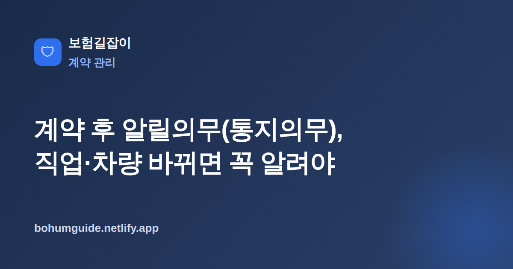

계약 후 알릴의무(통지의무), 직업·차량 바뀌면 꼭 알려야 하는 이유
보험 가입 때만 정직하게 답하면 끝이라고 생각하기 쉽습니다. 하지만 계약이 유지되는 동안 직업이나 운전 형태, 사는 곳 같은 '위험'이 바뀌면 이를 보험사에 알려야 하는 의무가 따로 있습니다. 바로 통지의무(계약 후 알릴의무)입니다.

✍️ 편집자 참고: 본 글은 초안입니다. 통지 대상·효과는 상품·약관마다 다르니 게시 전 최신 약관 기준으로 검수·수정해 주세요.
보험금 청구 단계에서 뜻밖에 삭감이나 부지급을 겪는 분들 중에는 가입 때 잘못이 아니라, 계약 후 바뀐 상황을 제때 알리지 않은 경우가 적지 않습니다. 통지의무는 이름이 낯설 뿐, 원리는 단순합니다. 계약을 맺을 때 보험사가 평가한 위험보다 실제 위험이 커졌다면 그 변화를 알려야 한다는 것입니다. 어떤 변화를 언제 어떻게 알려야 하는지 실전 기준으로 정리했습니다.
고지의무(계약 전) vs 통지의무(계약 후)의 차이
둘 다 '사실대로 알린다'는 점은 같지만 시점이 다릅니다. 고지의무는 계약을 맺기 전, 청약 시점에 병력이나 직업 등 위험 판단에 필요한 사항을 사실대로 알리는 의무입니다. 반면 통지의무(계약 후 알릴의무)는 계약이 성립한 뒤 유지되는 동안, 위험이 뚜렷하게 커지는 변화가 생겼을 때 그 사실을 보험사에 알리는 의무입니다.
쉽게 말해 고지의무는 '가입할 때 한 번', 통지의무는 '유지하는 내내'입니다. 계약 전 알림이 어떤 의미인지 헷갈린다면 보험 고지의무 위반의 불이익을 함께 읽으면 두 의무의 차이가 더 또렷해집니다.
| 구분 | 고지의무 | 통지의무 |
|---|---|---|
| 시점 | 계약 전(청약 시) | 계약 후(유지 기간 중) |
| 대상 | 병력·직업 등 위험 판단 사항 | 계약 후 커진 위험(직업·운전·취미 등) |
| 알림 주체 | 주로 가입자의 최초 고지 | 변화 발생 시 계약자·피보험자의 통지 |
어떤 변화를 알려야 하나
일반적으로 '위험이 눈에 띄게 커지는' 변화가 통지 대상입니다. 대표적으로 다음과 같은 경우가 자주 문제됩니다.
- 직업·직무 변경 — 사무직에서 생산·건설 현장직처럼 상해 위험이 큰 일로 바뀐 경우
- 이륜차(오토바이) 상시 운전 — 배달 등으로 오토바이를 계속 타게 된 경우
- 위험한 취미 — 스쿠버·암벽등반·패러글라이딩 등 활동을 새로 시작한 경우
- 주소·차량 등 변경 — 자동차보험처럼 주소·차량·운전자 범위가 보험료·위험에 영향을 주는 변경
특히 조심할 항목: 직업과 이륜차
실무에서 다툼이 가장 잦은 것이 직업 변경과 이륜차 운전입니다. 상해보험은 직업·직무의 위험등급에 따라 보험료와 보장이 달라지므로 직업이 바뀌면 통지 대상이 되는 경우가 많습니다. 오토바이 역시 사고 위험이 크다고 보아 상시 운전을 별도 통지 사항으로 두는 상품이 흔합니다. 자동차 쪽 위험 변경이 헷갈린다면 자동차보험 기본 구조를 함께 보면 어떤 변경이 보험료·보장에 닿는지 감을 잡기 좋습니다.
안 알리면 생기는 불이익
통지의무를 지키지 않으면 정작 사고가 났을 때 불이익이 돌아올 수 있습니다. 일반적으로 약관에 따라 보험금이 위험등급 차이만큼 비례해서 삭감되거나, 바뀐 위험과 직접 관련된 사고라면 보험금 부지급, 심한 경우 계약 해지로 이어질 수 있습니다.
가장 흔한 오해
"보험료만 잘 내면 되지 않나요?"라고 생각하기 쉽지만, 통지의무 위반은 보험료 납입과 무관하게 청구 단계에서 문제가 됩니다. 특히 오토바이 배달처럼 위험이 크게 오른 상태를 알리지 않으면, 그와 관련된 사고에서 보험금을 받기 어려워질 수 있으니 변화가 생기면 바로 통지하는 것이 안전합니다.
실전: 언제·어떻게 통지하나
원칙은 간단합니다. 변경이 생기면 미루지 말고 즉시 알리는 것입니다. 시간이 지날수록 "언제부터 바뀌었는지" 입증이 어려워지고, 그사이 사고가 나면 다툼이 생깁니다.
기록을 남기는 방법
통지는 전화로도 가능하지만, 나중을 위해 서면·앱·홈페이지 등 기록이 남는 방법을 함께 쓰는 것이 좋습니다. 콜센터에 알렸다면 접수번호와 날짜를 메모하고, 모바일 앱이나 고객센터 게시판으로 남긴 내역은 화면을 저장해 두세요. 처리 결과(보험료 조정, 배서 등) 안내를 받으면 그 문서도 함께 보관합니다.
가입 시점부터 이런 항목을 미리 알아두면 유지 단계가 훨씬 수월합니다. 가입 전 체크리스트로 내 직업·운전 형태가 통지 대상이 될 수 있는지 미리 확인해 두면 나중에 당황할 일이 줄어듭니다.
요약
통지의무는 계약 후 위험이 커지는 변화(직업·직무 변경, 이륜차 상시 운전, 위험한 취미, 주소·차량 변경 등)를 보험사에 알리는 의무로, 계약 전에 한 번 알리는 고지의무와 구별됩니다. 지키지 않으면 약관에 따라 보험금 삭감·부지급, 계약 해지까지 이어질 수 있습니다. 변화가 생기면 즉시, 기록이 남는 방법으로 통지하는 것이 청구 단계의 불이익을 막는 가장 확실한 방법입니다.
참고할 수 있는 공신력 있는 자료
- 금융감독원 — 통지의무·계약 관리 소비자 안내
- 금융소비자 정보포털 파인 — 보험 계약·약관 정보 조회
- 생명보험협회 — 생명·상해보험 계약 관련 안내
본 정보는 일반적인 안내이며, 통지 대상과 효과는 각 보험사 약관과 전문가 상담을 통해 반드시 확인하시기 바랍니다.